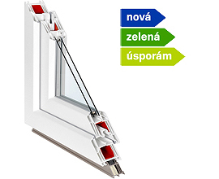

Plast
Uw = 0,81 - 1,2 W/m²K

Inoutic Arcade 71
Osvědčený 5komorový německý profil se stavební hloubkou 71 mm, rovným křídlem a dvěma dorazovými těsněními pro spolehlivou izolaci.
Hloubka rámu
71 mm
Počet komor
5 komor
Akustika Rw
34 - 44 dB
Bezpečnost
Kování ROTO NT